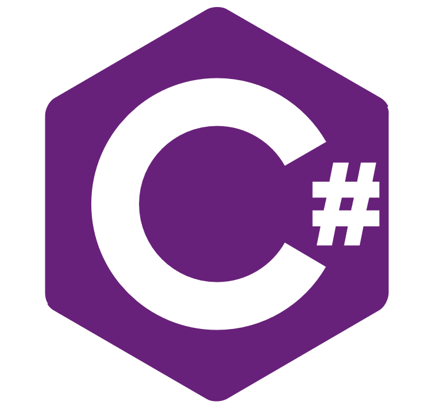
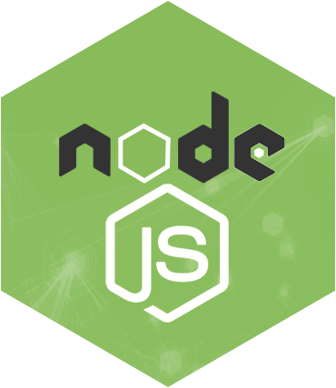
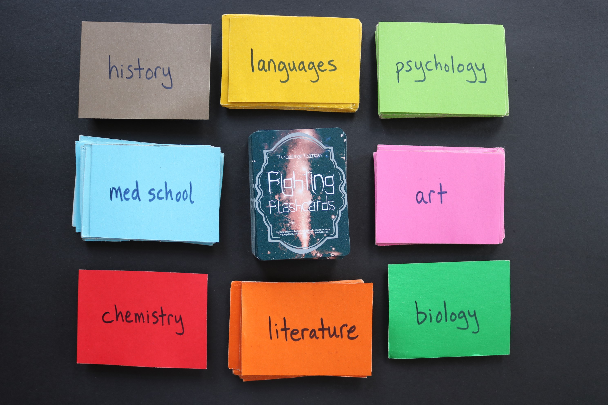
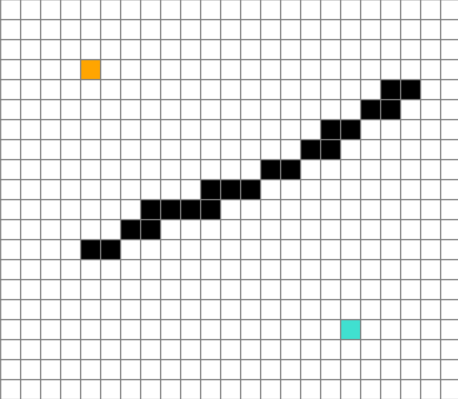
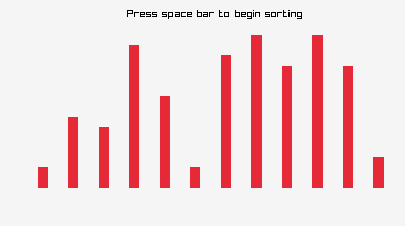
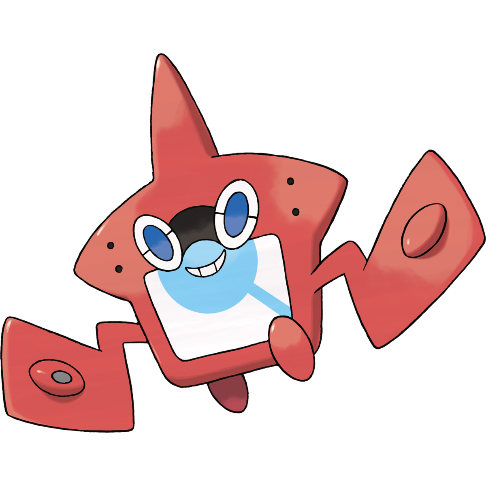
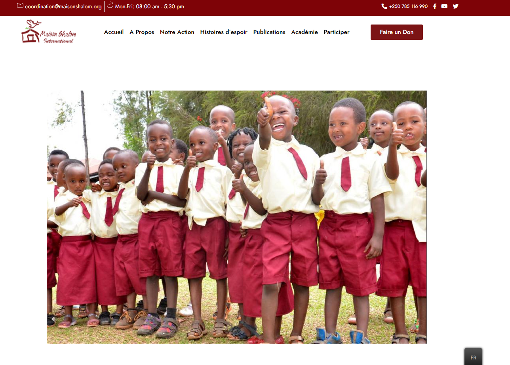
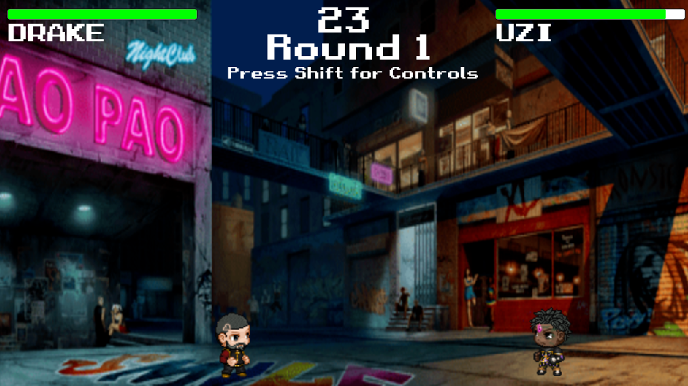
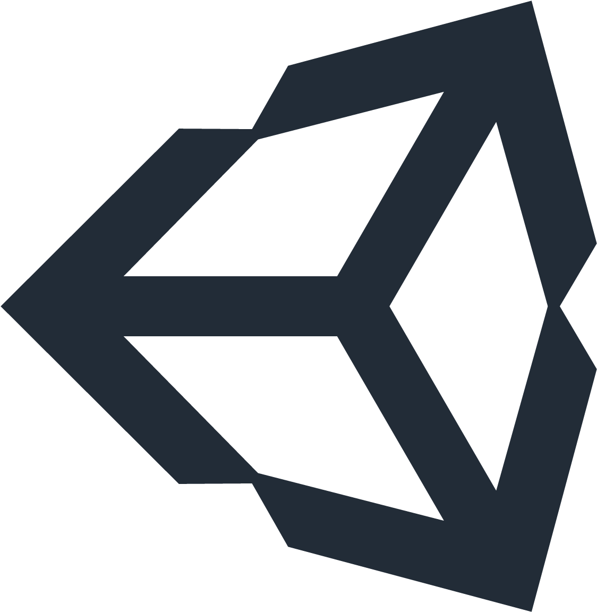
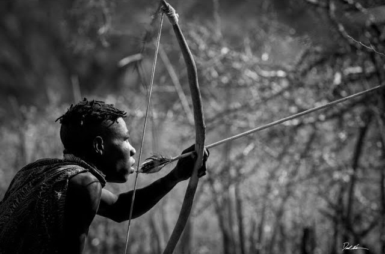

Started Computer Science at John Abbott College
Began formal studies in computer science, building foundations in programming and problem solving.
EDUCATION / WORK / PROJECTS
A chronological record of learning, work, and shipped projects.
Began formal studies in computer science, building foundations in programming and problem solving.

Built a first console game and added a mode where the AI plays against itself.

Maintained and reimaged office systems and supported Windows and Linux troubleshooting.

Created a browser version of the classic game using canvas and JavaScript.

Built a desktop media utility in C#.

Created a desktop study app in C# and later expanded it with database support.

Visualized grid-based pathfinding using Python.

Used C++ to show how sorting algorithms progress through data.

Created a Pokémon browser with Angular and TypeScript.
Built the initial React donation website for a fundraising campaign supporting a school in Kigali.

The donation website went live after the React prototype was redesigned in WordPress.

Redesigned the desktop flashcards app to store study data in a database.
Used Pygame projects to practice Python, animation, and player controls.

Created a local multiplayer browser fighting game with Vathusan Vimalarajan.

Worked with a team of four to develop the Android version of the flashcards app.

Completed an early game development project using Unity.
Built a music streaming web project using the MVC pattern.

Built a market analysis product for traders who need timely economic data.
Began a full-time programming role at Oriso Solutions.
Worked on ThingWorx industrial IoT services, equipment data, alerts, and performance testing.
Developed an app connecting parents with babysitters, with secure payments and identity checks.
Building cloud cluster management features including Proxmox VM management, Angular interfaces, deployment workflows, monitoring, and payment processing.
Graduated from John Abbott College with coursework in algorithms, full-stack development, mobile development, networking, operating systems, cybersecurity, and IoT.

Released a 3D survival game made with Unreal Engine 5 on itch.io.

Released a Godot science and gardening game with a playable browser chapter and Windows download.